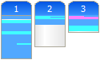

| the visualiser aspectJ development tools subproject |
 |
| Welcome | ||||||||||||||||||||||
|
The Visualiser is an extensible Eclipse plugin that can be used to visualize anything that lends itself to a 'bars and stripes' style representation. It began as the Aspect Visualiser, which was a part of AJDT. It was originally created to visualize how aspects were affecting classes in a project. It has since been extracted to become its own plug-in and given extension points in order that other types of information can be visualized. An on-line demo showing how to use the Visualiser with AJDT is available from the AJDT demos page. A tutorial exploring the Visualiser in detail, and describing the process of creating a new provider, using the Google provider as an illustration, is available from developerWorks: Create your own visualisations in Eclipse. |
||||||||||||||||||||||
| Download | ||||||||||||||||||||||
|
The Visualiser can be obtained either by installing AJDT or in standalone form as a zip file from the table below.
|
||||||||||||||||||||||
| Additional providers | ||||||||||||||||||||||
|
The following providers are included with the Visualiser plugin itself:
The following providers are available separately:
|